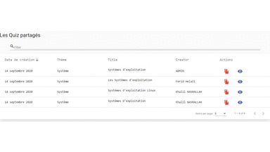
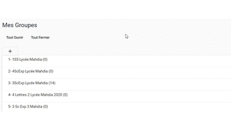
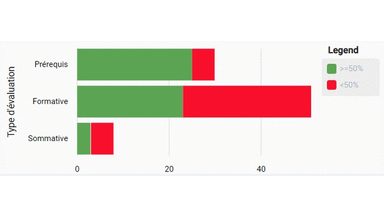
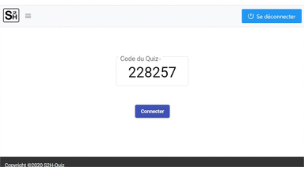

Avec S2H vous allez pouvoir gérer des questionnaires et des quiz avec différents types de questions
(QCM,QCU...).
Le temps voulu, vous pourriez démarrer des session basées sur ces quiz afin de permettres à l'audience ou aux
apprenants de répondre.
QuizGérer vos Quiz

GroupesGérer vos Groupes d'apprenants

Avec S2H vous allez pouvoir gérer des groupes d'apprenants dont l'identifiant et le mot de passe sont générés
automatiquement.
Cela vous permettra par la suite de limiter l'accès à un Quiz à un groupe bien déterminé.
Un tableau de bord vous donnera un aperçu statistique sur les réponses de vos apprenants.
Des courbes vous montreront l'évolution de vos apprenants.
DashboardVue globale de vos informations

S2H QuizInterface de saisie des réponses

Avec S2H Quiz, un apprenant ou un membre de l'audience aura la possibilité de répondre aux questions proposées dans vos Quiz.
Dans le cas d'une évaluation, il aura comme retour son score obtenu et éventuellement les bonnes réponses si vous le désirez.